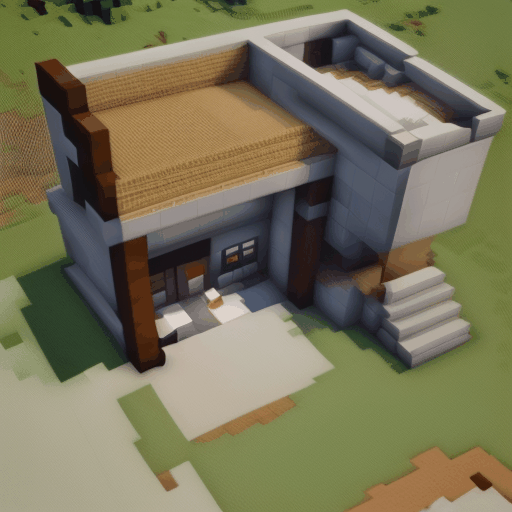
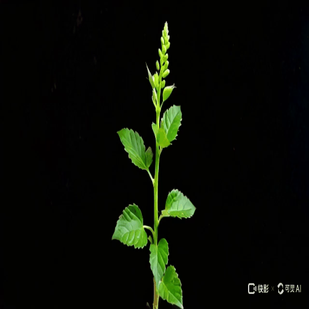
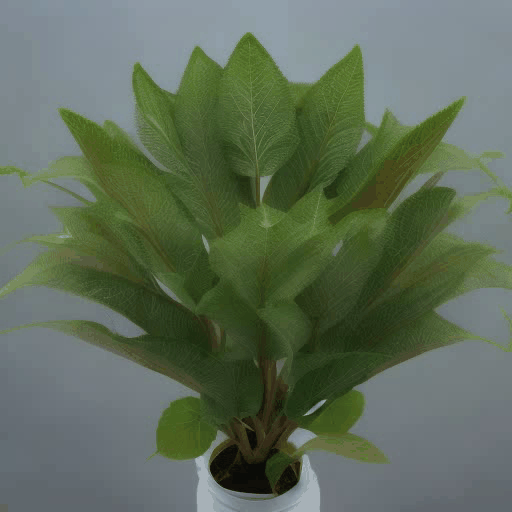
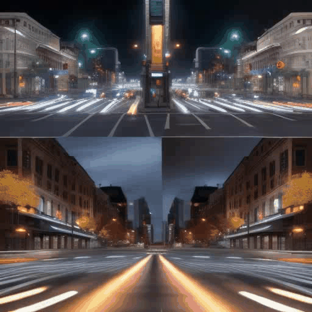
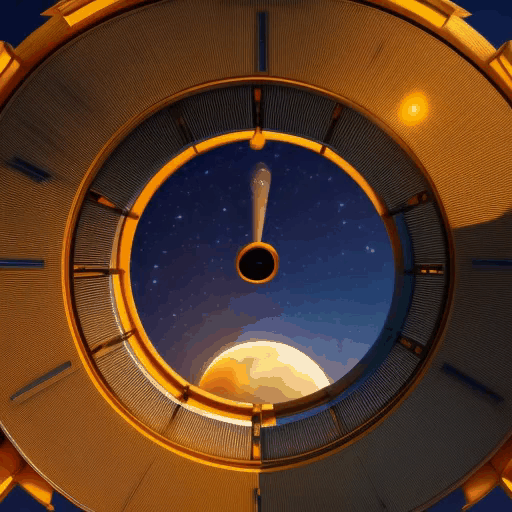
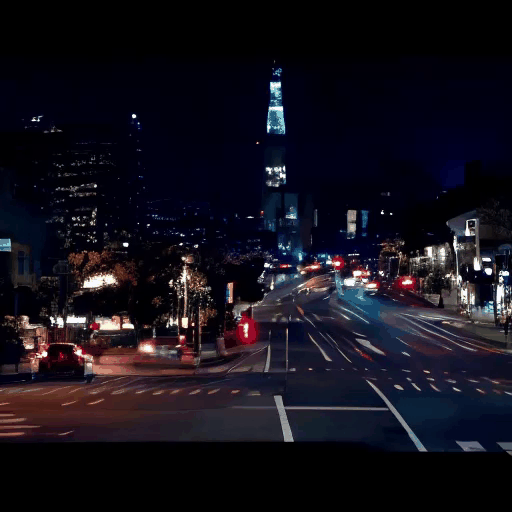

We propose a novel text-to-video (T2V) generation benchmark, ChronoMagic-Bench1, to evaluate the temporal and metamorphic capabilities of the T2V models (e.g., Sora2 and Lumiere3) in time-lapse video generation. In contrast to existing benchmarks that focus on visual quality and textual relevance of generated videos, ChronoMagic-Bench focuses on the models’ ability to generate time-lapse videos with significant metamorphic amplitude and temporal coherence. The benchmark probes T2V models for their physics, biology, and chemistry capabilities, in a free-form text query. For these purposes, ChronoMagic-Bench introduces 1,649 prompts and real-world videos as references, categorized into four major types of time-lapse videos: biological, human-created, meteorological, and physical phenomena, which are further divided into 75 subcategories. This categorization ensures a comprehensive evaluation of the models’ capacity to handle diverse and complex transformations. To accurately align human preference with the benchmark, we introduce two new automatic metrics, MTScore and CHScore, to evaluate the videos' metamorphic attributes and temporal coherence. MTScore measures the metamorphic amplitude, reflecting the degree of change over time, while CHScore assesses the temporal coherence, ensuring the generated videos maintain logical progression and continuity. Based on the ChronoMagic-Bench, we conduct comprehensive manual evaluations of ten representative T2V models, revealing their strengths and weaknesses across different categories of prompts, and providing a thorough evaluation framework that addresses current gaps in video generation research. Moreover, we create a large-scale ChronoMagic-Pro dataset, containing 460k high-quality pairs of 720p time-lapse videos and detailed captions. Each caption ensures high physical pertinence and large metamorphic amplitude, which have a far-reaching impact on the T2V generation community.
We visualize the evaluation results of various open-source T2V generation models across ChronoMagic-Bench.
The values have been normalized for better readability of the chart. The normalization process involves scaling each set of performance values to a common scale between 0.3 and 0.8. The formula used for normalization is: (value - min_value) / (max_value - min_value).
We visualize the evaluation results of various closed-source T2V generation models across ChronoMagic-Bench.
The values have been normalized for better readability of the chart. The normalization process involves scaling each set of performance values to a common scale between 0.3 and 0.8. The formula used for normalization is: (value - min_value) / (max_value - min_value).
| MTScore ≈ 0.2 | MTScore ≈ 0.3 | MTScore ≈ 0.4 | MTScore ≈ 0.5 |
|---|---|---|---|
 |
 |  |
| CHScore ≈ 2.0 | CHScore ≈ 8.0 | CHScore ≈ 15.0 | CHScore ≈ 26.0 |
|---|---|---|---|
 |
 |
 |
It is evident that the proposed three metrics, MTScore, CHScore, and GPT4o-MTScore, are consistent with human perception and can accurately reflect the metamorphic amplitude and temporal coherence of T2V models. (ð and £ represent Kendall's↑ and Spearman's↑ coefficients, respectively. ↑ denotes higher is better.)
| Method | "an unidentified plant growing [...]" | "day-to-night cycle over a city [...]" | "showing varying traffic flow [...]" |
|---|---|---|---|
| Gen-2 |  |
 |
 |
| PiKa-2.0 | |||
| KeLing |  |  |
 |
| Dream Machine |  |
 |
 |
| AnimateDiff-V3 |  |  | |
| VideoCrafter2 | |||
| MagicTime |  | ||
| OpenSoraPlan v1.1 |  |
 |
|
| OpenSora 1.1 |  |
 | |
| OpenSora 1.2 |  |
 |
 |
Both ChronoMagic-Bench and ChronoMagic-Pro are based on four major natural phenomena. The "biological" category encompasses all content related to living organisms; The "human-created" category includes objects created or influenced by human activities; The "meteorological" category covers meteorological phenomena; The "physical" category pertains to non-biological physical phenomena, such as water flow and volcanic eruptions.
This image showcases the word cloud and word count range of the prompts in ChronoMagic-Bench, which mainly describe videos with large metamorphic amplitude and long persistence.
Video clips statistics in (Top) ChronoMagic-Pro and (Bottom) ChronoMagic-ProH. The dataset includes a diverse range of categories, durations and caption lengths, with most of the videos at the 720P resolution. ChronoMagic-ProH has higher quality and purity (e.g. Aesthetic Score)
If you find our work useful, please consider citing our paper:
@article{yuan2024magictime,
title={MagicTime: Time-lapse Video Generation Models as Metamorphic Simulators},
author={Yuan, Shenghai and Huang, Jinfa and Shi, Yujun and Xu, Yongqi and Zhu, Ruijie and Lin, Bin and Cheng, Xinhua and Yuan, Li and Luo, Jiebo},
journal={arXiv preprint arXiv:2404.05014},
year={2024}
}